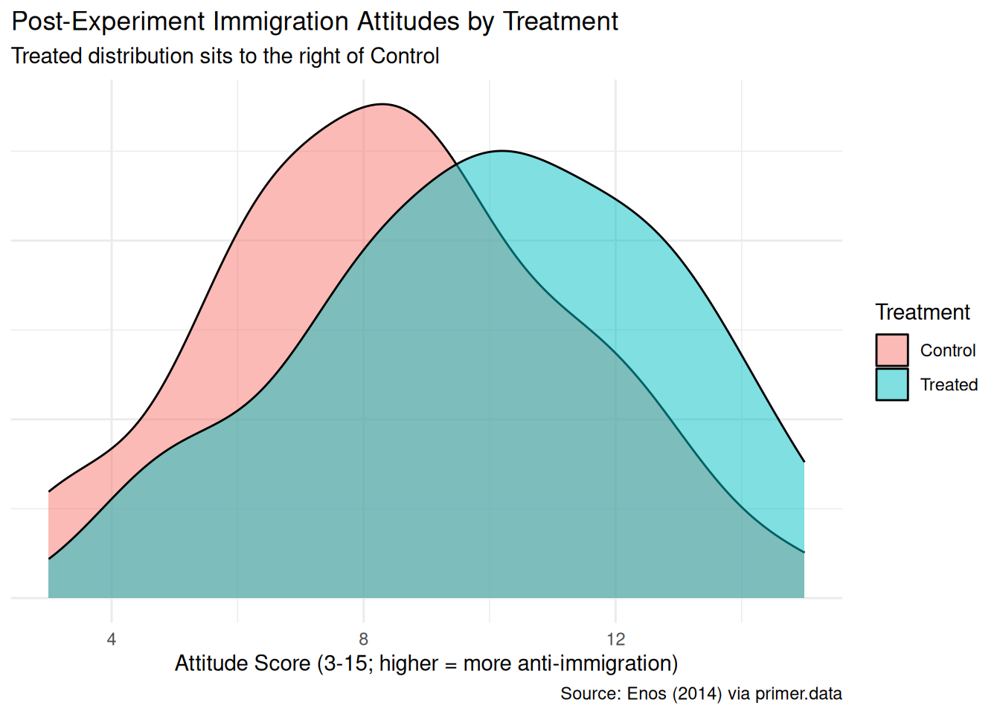
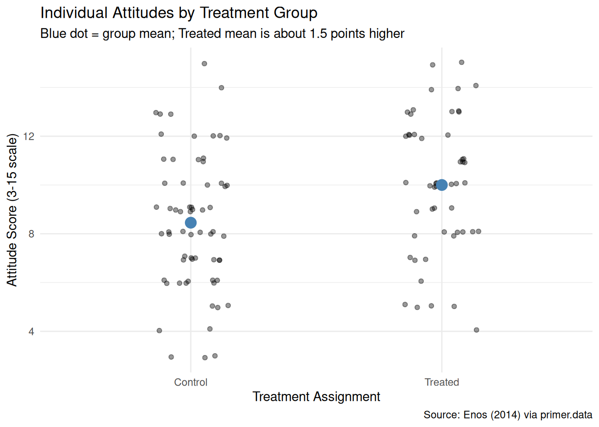
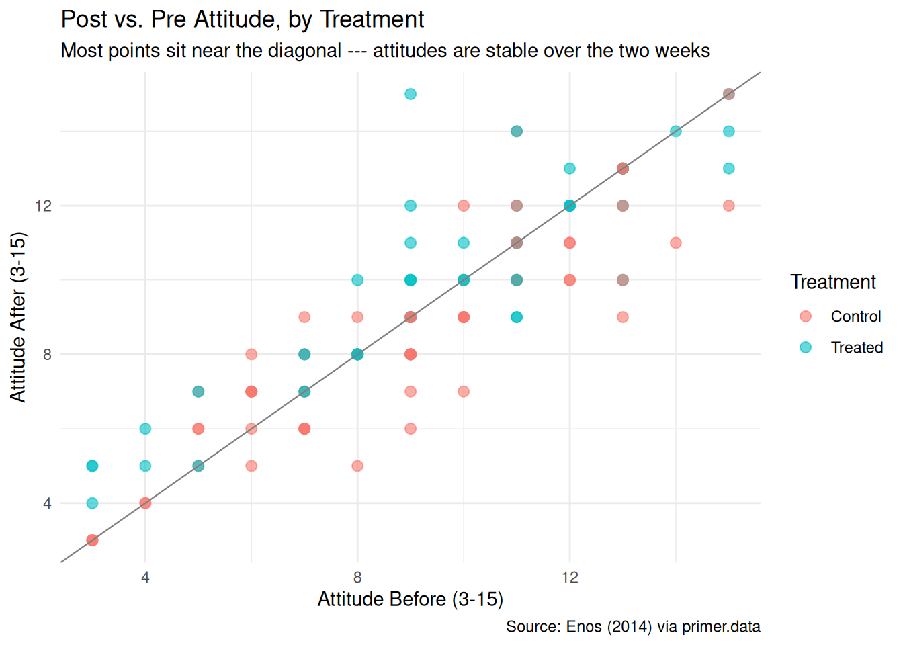
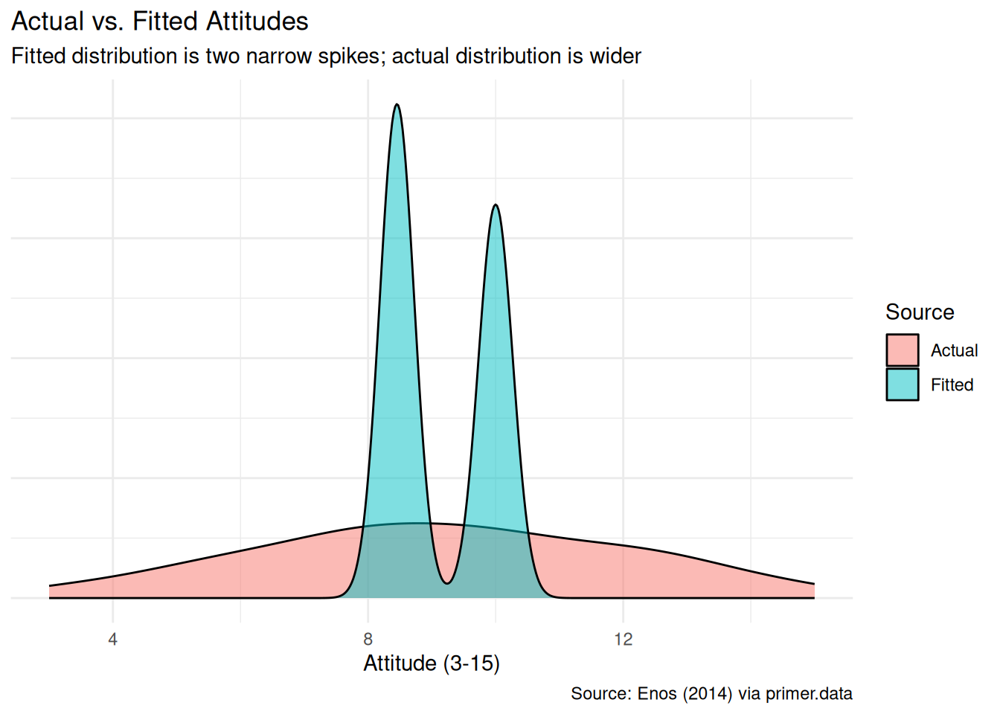
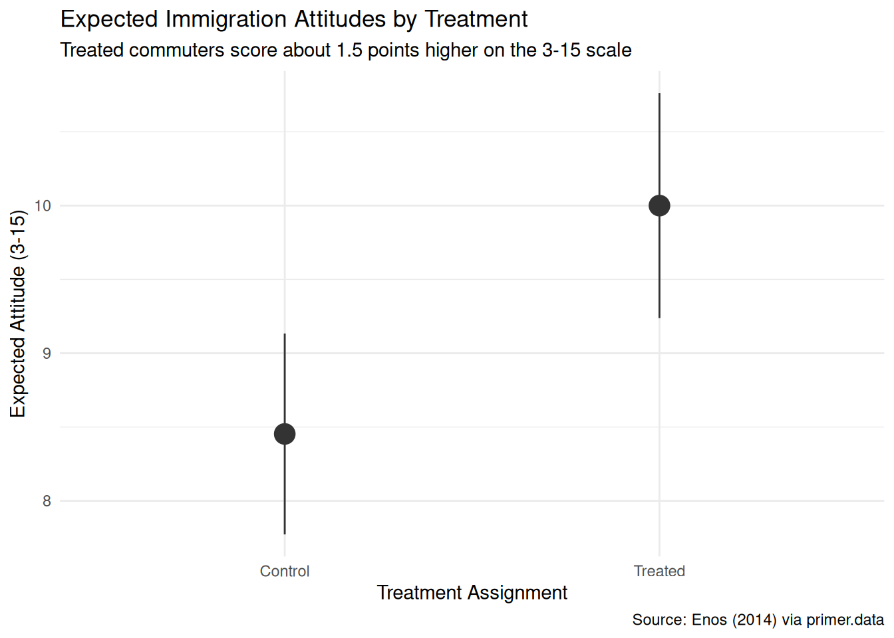

6 Trains
The four Cardinal Virtues for working through a data science problem are Wisdom, Justice, Courage, and Temperance. This chapter — the first causal example in the Primer, sitting between the predictive Recruits chapter and the next predictive chapter (Colleges) — works through the simplest possible causal problem: a linear regression of a continuous outcome on a single binary, randomly-assigned treatment. The matching tutorial is 06-trains in the primer.tutorials package; almost every line of code in that tutorial appears here, surrounded by more prose, more exploration, and a paired predictive version of the same question.
Imagine that you are the data scientist for a Republican congressional campaign in Georgia. The candidate has a big-picture goal — win the November election — and trusts you to figure out where the campaign’s limited time, money, and attention should go. Many causal and predictive models would inform that allocation: which voters are persuadable, which messages move opinion, how turnout shifts with mailings or door-knocks, how exposure to immigrant neighbors shapes attitudes about immigration. The Quartermaster of an earlier chapter wanted uniform sizes; your candidate wants vote shares. Both jobs hinge on numerical estimates of unknown quantities, each with its own uncertainty. This chapter focuses on one such estimate: the average causal effect of overhearing Spanish on a commuter platform on voters’ immigration attitudes. The estimate alone won’t decide the campaign’s messaging strategy, but it is one good input to a question the campaign cares about — does brief, everyday exposure to immigrants move opinion, and by how much? There are many decisions to make.
The data we will work from is trains, available in the primer.data package. It records 115 commuters from a 2012 field experiment conducted by political scientist Ryan Enos on the MBTA commuter rail, the suburban rail network serving the Boston metropolitan area. Each row is one commuter; key columns are treatment (whether the commuter’s morning platform had a pair of Spanish-speaking confederates during the experiment), att_end (the commuter’s anti-immigration attitude after the experiment, on a 3–15 integer scale), and att_start (the analogous pre-experiment score). The tibble also records demographics — sex, race, age, income, party, liberal (an ideology flag), commuter rail line and station — which we will mostly leave alone here but which open the door to the heterogeneous-effects questions a campaign analyst would care about.
6.1 Wisdom
Wisdom begins with a question and then moves on to the creation of a Preceptor Table and an examination of our data.
Wisdom commits us to a question precise enough to be answered. The Preceptor Table makes the commitment concrete: it is the smallest table that, if every cell were filled in with the truth, would make the question’s answer easy to read off.
The combination of some data and an aching desire for an answer does not ensure that a reasonable answer can be extracted from a given body of data. — John W. Tukey
6.1.1 The Enos experiment
In January 2012, political scientist Ryan Enos ran a small field experiment on the MBTA Commuter Rail platforms outside Boston. Two Spanish-speaking confederates — both U.S.-born native English speakers as well, recruited from a local community — rode the morning trains from a small set of suburban stations on the Framingham/Worcester Line into South Station. On treated platforms, the confederates stood in plain sight of waiting commuters and held conversations in Spanish at conversational volume during the morning wait. On control platforms, the confederates were absent. Treatment and control platforms were assigned randomly. The experiment ran for two weeks; commuters on the affected platforms were surveyed about their immigration attitudes before and after the window. Enos’s paper, “Causal effect of intergroup contact on exclusionary attitudes,” appeared in PNAS in 2014.
The MBTA Commuter Rail serves the Boston metropolitan area — a network of about a dozen lines radiating from South Station and North Station into the suburbs, with a typical weekday ridership in the low six figures. The stations Enos used (Grafton, Southborough, others on the Framingham/Worcester Line) sit in residential suburbs west of Boston, predominantly white, middle- and upper-income, with relatively small Hispanic populations — a feature visible in the hisp_perc column of the trains tibble, where the percent-Hispanic populations of the station areas are all under 5%. Riders are predominantly daily commuters, on the platform at the same time each morning. They notice the same faces, see the same confederates day after day. This is intergroup contact at its most repeated, least mediated, and most prosaic.
The experiment is small. Enos’s surveys yielded responses from 115 commuters — enough to detect a moderate average effect but not enough to chase heterogeneous effects with confidence. The dataset has been used widely in causal-inference teaching since 2014, partly because the design is so clean — randomized at the platform level, brief, with pre- and post-treatment measurements of the outcome — and partly because the finding is unexpected: a brief, prosaic exposure to Spanish speakers on a train platform produced a measurable, statistically significant increase in opposition to immigration among treated commuters relative to controls. Whatever its mechanism (the intergroup-contact literature mostly predicts the opposite sign), the finding has held up to replication and reanalysis.
6.1.2 Measuring immigration attitudes
The outcome variable att_end is a sum of three survey items. Enos’s questionnaire asked respondents to agree or disagree, on a five-point Likert scale (1 = strongly agree to 5 = strongly disagree, with the item phrasings flipped where necessary), with three propositions about U.S. immigration policy: whether immigration to the U.S. should be increased, whether children of unauthorized immigrants should be allowed to attend public school, and whether English should be the official language of the U.S. The three items were summed (after recoding so that higher numbers always mean more restrictive immigration views), yielding an integer score between 3 (least restrictive across all three items) and 15 (most restrictive across all three items). The att_start column is the same scale from the pre-experiment survey; att_end is from the post-experiment survey two weeks later.
A few features of this measure matter. First, it is an attitudinal report, not a behavior: people who answer surveys are not necessarily voting consistent with those answers. Second, it is a politically charged topic, and survey responses on charged topics suffer from social-desirability bias — respondents may give the answer they think the surveyor wants to hear, which is not the answer they would give in a voting booth. Third, the three items capture only a thin slice of “immigration attitudes” — a fuller measure would ask about specific policies, particular national-origin groups, the labor-market consequences of immigration, and so on. We will commit to att_end as a proxy for the underlying construct we care about, but we will return in Justice to the gap between the proxy and the truth.
6.1.3 The primary question
The primary question for this chapter is causal:
What is the average causal effect of exposure to Spanish-speakers on attitudes toward immigration?
This is a causal question — the kind of question that calls for a causal model. We want a single number: the average causal effect of being on a treated platform versus a control platform, over the population of commuters Enos’s experiment represents, expressed in points on the 3–15 attitude scale. The Preceptor Table that would let us answer this directly has four columns — one identifying each commuter, two potential-outcome columns (the attitude the commuter would report if exposed and the attitude they would report if not exposed), and one treatment column (the actual treatment assignment) — and one row per commuter in our population of interest. Each row’s causal effect is the difference between its two potential-outcome columns; the average causal effect is the average of those differences over all rows.
A note on the predictive/causal split before we get to the table. Causal effect and expected difference are not the same thing. The expected difference between Treated and Control commuters is a property of the world we can estimate from the data: we line up Treated commuters, line up Control commuters, take the difference of the averages, and read off a number. The causal effect is a within-row claim: for each commuter, the difference between their two potential outcomes, averaged across commuters. We never observe both potential outcomes for the same commuter — that is the fundamental problem of causal inference — so we cannot compute the causal effect directly. We use randomization to make the expected difference (computable) and the average causal effect (the thing we care about) equal in expectation. The Preceptor Table is about causal effects we cannot directly observe; the model is about expected differences, leaned on by randomization to approximate them.
| Preceptor Table --- Primary (causal) question1 | |||
| Commuter | Attitude if Exposed | Attitude if Not Exposed | Spanish Exposure |
|---|---|---|---|
| 1 If all the information in this table were available, we could answer the question: What is the average causal effect of exposure to Spanish-speakers on attitudes toward immigration? | |||
| 2 Each row is one MBTA Commuter Rail rider present during Enos's January 2012 experiment window. Enos surveyed 115 such commuters; the Preceptor Table is the smallest table that would let us answer the question, so it has one row per commuter in the population the experiment is supposed to inform. | |||
| 3 Attitude toward immigration on a 3-15 integer scale, where higher values indicate stronger opposition. Each cross-hatched cell marks the unobservable counterfactual --- the attitude the commuter would have reported under the treatment they did not receive, which no empirical procedure could ever recover. | |||
| 4 The commuter's actual treatment assignment: 'Exposed' if their platform had Spanish-speaking confederates during the two-week window, 'Not exposed' otherwise. Putting this column under a Treatment spanner is what marks the table as causal; the paired predictive Preceptor Table below puts the same column under a Covariate spanner. | |||
| 5 The causal effect for Michael Chen is the difference between his two potential outcomes: 13 - 8 = 5 points on the 3-15 scale. Because the Preceptor Table shows the unobservable truth, this is the true causal effect for him, not an estimate. | |||
The Preceptor Table is imaginary in the standard sense: we will never have its full content, because we will never observe both potential outcomes for the same commuter. What we do have is the data — one observed potential outcome per row, the other a ... — and a randomization mechanism that lets us bridge the gap. The act of writing the table down is what forces the question to be precise.
6.1.4 Exploring the data
Before fitting a model, look at the data. You can never look too closely at your data — the hour spent on a careful EDA almost always saves a day downstream.

The Treated density sits visibly to the right of the Control density, with the two modes offset by a point or two. The shift is real but not enormous; substantial overlap remains. With only 51 Treated and 64 Control commuters, the densities are wobbly — a density estimator with that few observations smooths heavily, hiding bumps and exaggerating others.

The jitter view shows the individual values without the smoothing the density imposes. The two group means, marked in blue, sit roughly 1.5 points apart on the 3–15 scale — close to a 10% shift in the scale’s full range. Individual scores range from the floor (3) to the ceiling (15) in both groups; the means are nudged apart by a population of treated commuters bunched a bit further up the scale.

Plotting att_end against att_start shows what most respondents look like in the data: a point cluster along the 45-degree diagonal, meaning most commuters reported essentially the same attitude two weeks later as they did at the start. The Treated points sit slightly above the diagonal on average — their post-attitude is, in the typical case, a fraction of a point higher than their pre-attitude — while the Control points scatter more symmetrically around it. The chapter does not use att_start as a covariate in the model (the tutorial works directly with att_end), but the plot suggests there is a story here for a causal-inference analyst willing to invest in a richer specification.
A few specifics worth flagging from the EDA:
- The platform-level randomization shows up in the demographics. Treated and Control commuters are not perfectly balanced on observable characteristics — the Treated group skews a bit older and a bit more conservative in the raw data. That imbalance is plausibly chance with only 115 units; we will revisit it when we discuss unconfoundedness.
-
No missing values in the columns we use. Some demographic columns have a few
NAs, butatt_end,att_start, andtreatmentare complete. - Ceiling and floor effects. A handful of commuters report scores of 15 (the ceiling); a smaller number report 3 (the floor). If treatment pushed an already-high responder’s “true” attitude higher than 15, the ceiling would clip the effect, and the estimate would understate the true causal impact. With only a handful of ceiling rows the bias is modest.
6.1.5 The paired question
The difference between predictive models and causal models is that the former have one column for the outcome variable and the latter have more than one column.
Every chapter pairs its primary question with one in the opposite framing. Since our primary question is causal, the paired question is predictive:
What is the difference in expected immigration attitudes between commuters exposed to Spanish-speakers and commuters not exposed?
This is the predictive twin of the causal primary. The same fitted model serves both — the same 1.5-point coefficient on treatment is the answer to both — but the readings differ:
- The causal reading says: exposure to Spanish-speakers on a morning platform raises the average attitude score by about 1.5 points on the 3–15 scale. That is a claim about what would happen if we toggled treatment on or off, requiring us to defend unconfoundedness.
- The predictive reading says: commuters in the Treated group have, on average, attitude scores about 1.5 points higher than commuters in the Control group. That is a claim about comparison between two existing groups, with no commitment about what would happen under an intervention.
Unlike the Recruits chapter, where the paired causal reading was absurd (we cannot toggle a recruit’s sex), here both readings are defensible. The causal reading is defensible because the assignment was randomized, so unconfoundedness is essentially guaranteed by design. The predictive reading is defensible because comparing two existing groups requires no intervention claim — it is just a comparison. The pedagogical point is therefore the mirror image of Recruits: the predictive/causal distinction is something the analyst commits to, not something the data forces, and either reading can be the honest one depending on the problem. The same fit, the same number, two valid readings.
| Preceptor Table --- Paired (predictive) question1 | ||
| Commuter | Attitude (3-15) | Spanish Exposure |
|---|---|---|
| 1 If all the information in this table were available, we could answer the question: What is the difference in expected immigration attitudes between exposed and non-exposed commuters? | ||
| 2 Same units as the primary Preceptor Table --- one row per commuter in the population. | ||
| 3 One observed attitude per commuter (no potential outcomes), on the 3-15 scale. Each row has a single value because the predictive framing has no treatment to vary. | ||
| 4 The same column that sat under a Treatment spanner in the primary Preceptor Table sits here under a Covariate spanner. The column itself is identical. Only the analyst's commitment changed. | ||
The two Preceptor Tables differ in exactly the bookkeeping that distinguishes predictive from causal:
- The primary (causal) table has two potential-outcome columns (
Attitude if Exposed,Attitude if Not Exposed), with the unobservable counterfactual hatched in each row. The paired (predictive) table has one outcome column (Attitude (3-15)) per row, with no hatching — predictive models have no counterfactuals. - The primary table puts
Spanish Exposureunder a Treatment spanner. The paired table puts the same column under a Covariate spanner. The column itself is the same; the analyst’s commitment is what changed.
The same fitted model serves both questions. The chapter’s two Temperance answers will read the same number through the two framings.
6.2 Justice

Justice concerns the Population Table, the four key assumptions which underlie it (validity, stability, representativeness, and unconfoundedness), and the choice of probability family and link function for the data generating mechanism.
Justice is where you (or your critics) raise concerns about whether the model will do what you want it to do — and where you commit to defending it. The four assumptions are the named families of concerns; they are not testable from the data alone but are choices the analyst makes and defends.
The bridge runs data → population → Preceptor Table. The data tells us about the population from which both the data and the Preceptor Table are drawn; the population tells us about the Preceptor Table’s units. Justice’s job is to make sure both arrows are defensible.
There are known knowns. There are things we know we know. We also know there are known unknowns. That is to say, we know there are some things we do not know. But there are also unknown unknowns, the ones we do not know we do not know. — Donald Rumsfeld
6.2.1 The Population Table for the primary question
| Population Table --- Primary question1 | |||||
| Commuter | Year | Attitude if Exposed | Attitude if Not Exposed | Spanish Exposure | |
|---|---|---|---|---|---|
| 1 Both blocks are drawn from the same narrow population of Boston-area MBTA Commuter Rail riders present during Enos's January 2012 window. The Data rows are the 115 commuters Enos actually surveyed. The Preceptor rows are the same 115 commuters under the potential-outcomes lens --- both potential outcomes filled in with the unobservable counterfactual hatched. The temporal alignment is unusual: the data IS the experiment, so the relationship between data and Preceptor Table is tighter than in most causal tutorials. | |||||
6.2.2 Validity
Validity is the consistency, or lack thereof, in the columns of the data set and the corresponding columns in the Preceptor Table.
Validity is about columns. Two columns can have the same name and measure different things, or different names and measure the same thing.
For our problem, the outcome column att_end records the stated attitudes commuters give to a three-item survey. The Preceptor Table’s outcome columns are supposed to capture the underlying attitudes we care about as a campaign — the attitudes that drive vote choice, conversation, civic action. Stated and underlying are not the same. On a politically charged topic, the gap between what people say to a surveyor and what they think (and how they vote) can be large, and the direction of the gap is not consistent: respondents may overstate their tolerance to appear progressive or understate it to align with peers. The three Enos items also cover only a sliver of “immigration attitudes.” A four-item or ten-item measure might capture different aspects.
The treatment column has its own validity problem. In the data, exposure meant standing on a platform where two Spanish-speaking confederates conducted a brief conversation in Spanish at conversational volume during a morning commute. In the campaign’s mental model — the Preceptor Table the campaign actually cares about — exposure presumably means whatever brief interactions Georgia voters have with Spanish-speakers in their everyday lives: at the supermarket, at school pickup, in line at a coffee shop. Those exposures differ from Enos’s in setting, in duration, in cultural framing, and in whether the speakers are perceived as outsiders or neighbors. Treating the two as the same column is an analyst’s commitment, not a fact.
6.2.3 Stability
Stability means that the relationship between the columns in the Population Table is the same for three categories of rows: the data, the Preceptor Table, and the larger population from which both are drawn.
Stability is a statement about parameters, not distributions. A change in the marginal distribution of att_end between 2012 and 2026 does not, by itself, violate stability. What violates stability is a change in the parameter governing the relationship: the coefficient on treatment, the residual variance.
Fourteen years separate Enos’s experiment from a 2026 campaign. The political environment has shifted, Spanish-language radio and TV penetration in suburban Boston has shifted, the average Bostonian’s familiarity with Spanish-speaking neighbors has shifted. Each of those is a distribution change. None is a parameter change on its own. The parameter we care about — the average treatment effect of a Spanish-conversation exposure on a 3–15 attitude score — might still be the same; it might also have flipped sign. There is no test from data alone that tells us.
A common confusion is to point at any change between eras and call it a stability violation. It isn’t. The mean of att_end in the population may have shifted upward, the spread may have widened, the mix of commuters may differ from Enos’s. None of that, on its own, violates stability. Stability requires that the causal-effect parameter \(\beta_1\) stays put.
6.2.4 Representativeness
Representativeness, or the lack thereof, concerns two relationships among the rows in the Population Table. The first is between the data and the other rows. The second is between the other rows and the Preceptor Table.
Two links to defend.
Data → population. Enos’s 115 commuters are not a random sample of any well-defined population. They are the commuters who happened to be on a small set of MBTA Commuter Rail platforms during a two-week window in January 2012 and who agreed to complete both the pre-survey and the post-survey. Commuters who refused, or who completed only one survey, drop out of the dataset. People who consent to surveys are systematically more agreeable; people who complete two surveys two weeks apart are systematically more conscientious or more interested in the topic. The 115-commuter sample is therefore not representative of even the broader pool of MBTA Commuter Rail riders, much less of suburban Boston, much less of the country.
Population → Preceptor Table. If we take “the population” to be 2012 Boston-area commuter rail riders, the population-to-Preceptor jump is twofold. First, the campaign’s target is Georgia voters in 2026, not Boston commuters in 2012; the demographic, geographic, and cultural distances are large. Second, even within Boston, the Preceptor Table’s rows should arguably include people who do not take the commuter rail — drivers, transit users, the unemployed — and the model’s estimate ignores all of them. The model fit to Enos’s 115 may not generalize to the full populations the campaign cares about; the direction of the bias is unclear and the magnitude could be substantial.
A non-representative sample doesn’t guarantee a biased estimate. By chance, the parameter we estimate might happen to coincide with the parameter in the target population. But chance is the only mechanism we have left to defend us, and we have no principled reason to expect it to work in our favor.
6.2.5 Unconfoundedness (primary causal question only)
Unconfoundedness means that the treatment assignment is independent of the potential outcomes, when we condition on pre-treatment covariates.
Unconfoundedness applies only to the primary causal question. The paired predictive question does not require it, because the paired question makes no claim about what would happen under an intervention.
For the primary question, unconfoundedness is the assumption a randomized experiment is built to satisfy. Enos randomly assigned platforms (not individual commuters) to treatment. Random assignment guarantees that, in expectation, treated and control platforms have the same distribution of pre-treatment covariates — the same mix of ages, parties, ideologies, neighborhood backgrounds. With 115 commuters and randomization at the platform level, the expected balance is exact, but the realized balance in our particular dataset can still drift: a quick look at the data shows the Treated group skews slightly older and slightly more conservative than the Control group. That drift is plausibly chance and does not invalidate the design, but it is worth noting that platform-level randomization is weaker than individual-level randomization for this purpose — and that with only 115 units we cannot rule out a meaningful imbalance on unobserved characteristics.
Enos’s design is, in causal-inference vocabulary, an intent-to-treat analysis at the platform level. Each commuter’s treatment is the assignment of their platform, not the assignment of the commuter themselves. If a commuter on a treated platform never noticed the confederates, or noticed them and walked away, the treatment is still recorded as “Exposed.” If a commuter on a control platform happened to overhear Spanish on another train, the treatment is still “Not exposed.” This is the same averaging-out-the-real-world feature of any intent-to-treat estimate; it produces a policy-relevant number (what happens if a campaign organization runs an exposure program at the platform level) rather than a biology-relevant number (what happens when a specific brain processes a specific overheard conversation).
6.2.6 The Population Table for the paired question
The paired Population Table has the same row structure as the primary — the 115 commuters from Enos’s window, plus the “…” separators reminding us that the population is broader than the data — but a single outcome column instead of two, with no hatching. The predictive framing has no counterfactual to mark.
| Population Table --- Paired question1 | ||||
| Commuter | Year | Attitude (3-15) | Spanish Exposure | |
|---|---|---|---|---|
| 1 Same row structure as the primary Population Table, with one outcome column instead of two. Each commuter has one observed attitude --- the predictive framing requires no counterfactual. | ||||
6.2.7 Probability family and link function
The outcome att_end is a continuous integer (formally bounded between 3 and 15; in practice almost always treated as continuous on that range). The probability family is Normal:
\[Y \sim \mathcal{N}(\mu, \sigma^2)\]
The link function is the identity:
\[\mu = \beta_0 + \beta_1 X_1 + \cdots + \beta_n X_n\]
Our model will be a linear regression. The covariates we use are selected in Courage.
6.3 Courage

Courage creates the data generating mechanism.
The three languages of data science are words, math, and code, and the most important of these is code. Justice settled the structural choices — continuous outcome, Normal family, identity link. Courage picks specific covariates, writes the model formula in code, and uses R to estimate the unknown parameters.
The abstract DGM coming out of Justice is:
\[Y = \beta_0 + \beta_1 X_1 + \beta_2 X_2 + \cdots + \beta_n X_n + \epsilon\]
with \(\epsilon \sim \mathcal{N}(0, \sigma^2)\).
6.3.1 Candidate models
Courage rarely settles on its first guess. We try a handful of plausible specifications, see what each says, and commit to the one that matches the question.
6.3.1.1 Candidate 1: att_end ~ treatment
| term | estimate | conf.low | conf.high |
|---|---|---|---|
| (Intercept) | 8.45 | 7.77 | 9.14 |
| treatmentTreated | 1.55 | 0.51 | 2.58 |
The intercept is the expected attitude of a Control commuter: about 8.45. The coefficient on treatmentTreated is about 1.55: when we compare two commuters differing only in treatment assignment, the Treated commuter is expected to score about 1.55 points higher on the 3–15 scale. The 95% confidence interval for the coefficient runs from roughly 0.5 to 2.6, well above zero — the model says, with high confidence, that Treated commuters report more anti-immigration attitudes than Control commuters.
The language matters. “When we compare two commuters differing only in treatment” is the comparison framing, available to both predictive and causal readings. “Exposing a commuter to Spanish-speakers raises their attitude score by 1.55 points” is the causal framing, only honest when randomization defends unconfoundedness. With Enos’s design — platform-level randomization — the causal reading is defensible.
6.3.1.2 Candidate 2: att_end ~ party
| term | estimate | conf.low | conf.high |
|---|---|---|---|
| (Intercept) | 8.78 | 8.22 | 9.34 |
| partyRepublican | 2.17 | 0.79 | 3.54 |
party is a three-level factor (Democrat, Republican, Independent). The intercept is the expected attitude of the reference category (Democrat). The coefficient on partyRepublican is large and positive: Republicans in this sample report attitudes about 4 points higher than Democrats on the 3–15 scale. The coefficient on partyIndependent is small and noisy. This is exactly what we would expect about immigration attitudes by party affiliation in the early-2010s U.S. context — party predicts immigration attitudes strongly, even within a Boston suburban commuter sample.
This is a useful diagnostic but not our model. Party affiliation is not what the campaign is trying to change; the treatment is. We fit party here to see that the covariate has real signal — which it does — not to use it.
6.3.1.3 Candidate 3: att_end ~ treatment + party
| term | estimate | conf.low | conf.high |
|---|---|---|---|
| (Intercept) | 8.12 | 7.43 | 8.82 |
| treatmentTreated | 1.50 | 0.51 | 2.50 |
| partyRepublican | 2.11 | 0.78 | 3.44 |
Adding party to the treatment-only model leaves the coefficient on treatmentTreated essentially unchanged (still about 1.55, perhaps drifted to 1.4 or 1.6 depending on the random imbalance in the realized sample). This is exactly what we would expect from a properly randomized experiment: the treatment assignment should be roughly orthogonal to pre-treatment covariates like party, so adjusting for them should not move the treatment coefficient by much. Adjusting for party does tighten the residual variance — the model fits the within-party variation better — but the answer to the question we are asking does not change.
6.3.2 The chosen DGM
The simpler model is preferable when adjustment does not change the answer. We commit to att_end ~ treatment:
With the parameters estimated, we can write the fitted DGM as a concrete formula:
\[\widehat{\text{Attitude}} = 8.45 + 1.55 \cdot \text{treatmentTreated}\]
with residuals drawn from \(N(0, 7.7)\) — a residual standard deviation of about 2.8 points on the 3–15 scale.
Three differences from the abstract form. First, the parameters \(\beta_0\) and \(\beta_1\) are replaced by their best estimates. Second, the error term is gone from the right-hand side because this formula generates our estimated outcome, not the random variation around it (though the next line, \(N(0, 7.7)\), captures the residual variance). Third, the left-hand side has a hat (\(\widehat{\text{Attitude}}\)) because the hat marks an estimated value.
treatmentTreated is a 0/1 dummy: 1 for Treated commuters, 0 for Control. The intercept (8.45) is the expected attitude of a Control commuter; adding the slope (1.55) gives the expected attitude of a Treated commuter (about 10.0).
This is our data generating mechanism. It serves both the primary causal question and the paired predictive question. The fit object is the same; what differs is how we read it.
6.3.3 Model checking
A sanity check: the distribution of the fitted values should look like the distribution of the actual att_end. The two won’t match exactly — the model has only two predicted values (one for each treatment level) while the data has continuous variation — but the gross shape and central tendency should be close.

The fitted distribution has two narrow spikes (one near 8.45 for Control, one near 10.0 for Treated). The actual distribution is wider — the model is using only one binary covariate, so the within-group spread of attitudes goes into the residual variance. For our question (the average effect of treatment) this is fine. Adding more covariates would let the model recover more of the within-group spread but would not change the headline answer.
6.4 Temperance

Temperance interprets the data generating mechanism and then uses it to answer, with the help of graphics, the question(s) with which we began. Humility reminds us that this answer is always false.
In the modern world, all parameters are nuisance parameters. What we care about is what the model says on the outcome scale: predicted attitudes, predicted differences. The tool for translating parameters into outcome-scale answers is the marginaleffects package, with companion book Model to Meaning by Vincent Arel-Bundock.
6.4.1 The primary (causal) reading

The primary question was “What is the average causal effect of exposure to Spanish-speakers on attitudes toward immigration?” The model’s answer:
- Expected post-experiment attitude for a Control commuter: about 8.45, with a 95% confidence interval of roughly [7.77, 9.13].
- Expected post-experiment attitude for a Treated commuter: about 10.0, with a 95% confidence interval of roughly [9.24, 10.76].
- The average causal effect of treatment: about 1.55 points on the 3–15 scale, 95% CI roughly [0.51, 2.58].
The causal reading is available here because the assignment was randomized. Exposing a commuter to Spanish-speakers on a morning platform causes their post-experiment attitude score to rise by about 1.5 points on the 3–15 scale, relative to no exposure. This is the language of causation, and Enos’s platform-level randomization is what makes it defensible. A campaign-side analyst could use this to estimate, with appropriate skepticism, how a similar intergroup-contact exposure might shift attitudes elsewhere — with the caveat that “similar exposure” and “elsewhere” do a lot of work that the model itself cannot defend.
6.4.2 The paired (predictive) reading
The paired question was “What is the difference in expected immigration attitudes between exposed and non-exposed commuters?” The same fitted model gives the same number: about 1.55 points.
The predictive reading would say: commuters in the Treated group have, on average, post-experiment attitude scores about 1.5 points higher than commuters in the Control group. This is a statement about comparison between two existing groups, with no commitment about what would happen under an intervention.
Notice that, unlike the Recruits chapter, both readings are honest here. In Recruits the paired causal reading was absurd (we cannot toggle a recruit’s sex). Here the paired predictive reading is honest (we can compare two groups), and the primary causal reading is also honest (Enos’s randomization defends unconfoundedness). The same fit, the same number, two valid readings. What changes from problem to problem is which reading the analyst has the standing to claim. The thing that lets the causal reading travel here — random assignment — is also the thing that fails in many observational studies where the predictive reading is the only defensible one.
6.4.3 QoI variety
The chapter has answered the specific question we asked: the average causal effect of treatment. That is one number in a family. A campaign analyst would want, at minimum:
-
Heterogeneous effects. Does the treatment move conservative commuters more than liberal ones? Republicans more than Democrats? Older commuters more than younger ones? Each of these is its own causal question, asked of the same data, answered with a richer specification (e.g.,
att_end ~ treatment * party). With only 115 commuters and substantial party imbalance, the answers will come with wide confidence intervals — but the question is the campaign’s actual question, and the framework supports it. - The probability the effect is bigger than \(x\). Suppose the campaign cares whether a given intervention shifts at least one full point on the 3–15 scale. The model’s posterior probability that the true effect exceeds 1 point — a number we can read off the same fit — is what informs that decision, not the point estimate alone.
- Distributions over sample statistics. What is the maximum effect observed across the Treated group? The minimum across the Control group? These are not point parameters; they are distributions, which we can simulate from the DGM: draw 51 Treated and 64 Control synthetic commuters, compute the statistic, repeat ten thousand times, build a histogram. The DGM is a generator; once we have it, any question we can phrase as “draw n units, compute statistic, repeat” has an answer.
The chapter does not work through the simulation step in detail — that is for later chapters — but the pattern (draw from the DGM, summarize, repeat) is the general mechanism by which the Rubin framework answers any quantity of interest.
6.4.4 Why the answer is wrong
We can never know the truth.
Three things are likely wrong with our answer.
First, the validity gap is real. The 3–15 attitude scale measures stated survey responses, not the underlying attitudes that drive vote choice. The treatment was a brief, English-speaker-perceived-as-Spanish-speaker exposure on a Boston suburban platform, not whatever real exposure the campaign’s Georgia voters experience in their daily lives. Translating Enos’s 1.5-point effect into “what happens to my candidate’s polling among Georgia independents if we run an outreach campaign” requires another layer of assumptions on top of the model’s own.
Second, the representativeness gap is bigger than the validity gap. Enos’s 115 commuters were a non-random slice of one suburban commuter-rail line at one moment in early 2012. The pool the campaign cares about — Georgia voters in late 2026 — shares almost none of those features. The model’s confidence interval is correct under the assumption that the commuters Enos studied represent the population the campaign cares about, and that assumption fails badly. A realistic confidence interval for the Georgia-voter effect would be substantially wider, with substantial probability that the effect is in the opposite direction.
Third, the world is always more uncertain than our models would have us believe. Even if every assumption about validity, stability, and representativeness were exactly right — which they aren’t — the reported posterior would only be the Preceptor’s Posterior, the best posterior achievable under our assumptions, and that is not the truth. The reported confidence interval captures only sampling uncertainty under the model; it does not capture uncertainty about whether the model itself is correct. The map is not the territory.
6.5 Summary

Attitudes toward immigration respond, in the short run, to brief exposure to speakers of another language — at least in a 2012 Boston commuter-rail setting where the exposure is repeated, prosaic, and impossible to avoid. Using data from Ryan Enos’s January 2012 platform-randomized field experiment on the MBTA Commuter Rail (115 commuters surveyed before and after a two-week window during which Spanish-speaking confederates rode treated morning trains), we estimated the average causal effect of that exposure on a 3–15 anti-immigration attitude score. We modeled attitudes as a normally distributed variable which is a linear function of treatment, and read the fit two ways: a causal reading defended by the randomization, and a paired predictive reading that interprets the same coefficient as a between-group comparison. Both readings are honest — a contrast with the Recruits chapter, where the paired causal reading was absurd. The estimate: about 1.55 points on the 3–15 scale, 95% confidence interval roughly [0.5, 2.6]. Validity and representativeness both have substantial gaps against transferring the estimate to the Georgia-voter context the campaign actually cares about, and the confidence interval is consequently too narrow for any real-world use.
The chapter showed how to read the same fit two ways. A campaign analyst working with this number for real would want richer specifications — heterogeneous effects by party and ideology — and would treat the headline estimate as one input to a decision, not the decision itself.
The world is always more uncertain than our models would have us believe.